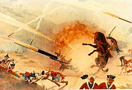

Kinezi su prvi, pretpostavlja se, izumili barut, pa tako i rakete s barutnim punjenjem.
Bile su jednostavne: smjesa u tubi se je stavljala na strijelu, a strijela u luk i ta
smjesa bez fitilja se je palila 1 sek prije izbačaja. S vremenom se je takvo opasno
paljenje prestalo koristiti, pa su se samo stavljale tube sa eksplozivnim punjenjem na
štapove usmjeravavši ih u neprijateljsku vojsku. Pošto su bile teške, padale su i već
nakon 20m, ali postoje i pisani podaci da su našli rješenja za to, ugradivši krilca, da
bolje sijeku zrak i brže idu kroz atmosferu. Englesko raketno topništvo je odigralo važnu
ulogu u napoleoskim ratovima. Od same povijesti rakete su bile od dvije vrste goriva: crni
i sivi barut. Prvo je bilo punjenje brzogoreće gorivo, crni barut, a onda sporogoreće
gorivo, sivi barut. Masa raketa je iznosila od 4 do oko 20 kg, a najveći domet im je bio
1000m, normalno, ovisilo je o količini i težini same smjese, veličini i širini trupa rakete,
i drugih stvari. U drugoj polovici XIX.st. rakete su napuštene zbog neproračunate slabe
preciznosti i nagloga razvoja topova. 1861. je prvi puta predložena uporaba raketa kako bi
ljudi otišli u svemir. Moderne rakete potječu it 1943 kada je Goddard napravio prvu raketu
na tekuće gorivo. Ta je raketa također imala diznu koja je povećala efikasnost raketnog
motora sa 2% na 64%. |
 |